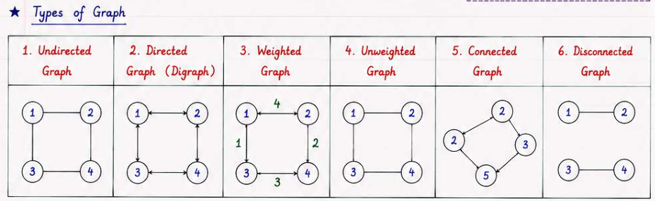
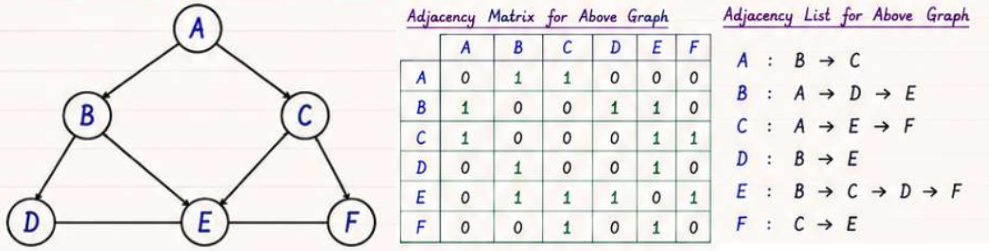

Core idea: Model pairwise relationships; choose traversal (BFS/DFS), shortest-path, or connectivity algorithm based on graph properties.
Recognise it when: "connected components", "shortest path", "dependencies / order", "can reach", "minimum cost to connect", grid with movement rules.
Costs: BFS/DFSO(V + E)· DijkstraO((V+E) log V)· Bellman-FordO(VE)· Floyd-WarshallO(V³)· MSTO(E log E)
A graph is G = (V, E). The core interview insight is which algorithm to reach for:


| Property | Adjacency Matrix | Adjacency List |
|---|---|---|
| Structure | V×V 2D array |
List<(int,int)>[] of size V |
| Space | O(V²) | O(V + E) |
| Check edge | O(1) | O(degree) |
| Get neighbours | O(V) | O(degree) |
| Add/remove edge | O(1) | O(1) add / O(degree) remove |
| Best for | Dense graphs | Sparse graphs (most interviews) |
Build adjacency list from edge list — the boilerplate you write at the start of every interview:
// Undirected weighted graph
var graph = new List<(int to, int w)>[n];
for (int i = 0; i < n; i++) graph[i] = new();
foreach (var e in edges)
{
graph[e[0]].Add((e[1], e[2]));
graph[e[1]].Add((e[0], e[2])); // omit for directed
}
Grids are implicit graphs — no explicit adjacency list needed.
// 4-directional movement (most problems)
int[] dr = { -1, 1, 0, 0 };
int[] dc = { 0, 0, -1, 1 };
// 8-directional (knight-style or diagonal allowed)
int[] dr8 = { -1,-1,-1, 0, 0, 1, 1, 1 };
int[] dc8 = { -1, 0, 1,-1, 1,-1, 0, 1 };
bool InBounds(int r, int c, int rows, int cols) =>
r >= 0 && r < rows && c >= 0 && c < cols;
// In-place visited marking (modifies grid — restore if needed)
grid[r][c] = '#'; // mark visited
// ... recurse ...
// grid[r][c] = original; // restore for backtracking
Trap: Always check bounds BEFORE accessing
grid[nr][nc], and mark visited at enqueue time, not dequeue time.
O(V+E) / O(V) Mark visited at enqueue time to avoid re-enqueueing. Use int size = q.Count snapshot for level-by-level traversal.
int[] BFS(List<int>[] g, int src)
{
int n = g.Length;
int[] dist = new int[n];
Array.Fill(dist, -1);
var q = new Queue<int>();
dist[src] = 0; q.Enqueue(src);
while (q.Count > 0)
{
int u = q.Dequeue();
foreach (int v in g[u])
if (dist[v] == -1) { dist[v] = dist[u] + 1; q.Enqueue(v); }
}
return dist;
}
Level-by-level BFS (e.g. Rotting Oranges, Word Ladder):
int level = 0;
while (q.Count > 0)
{
int size = q.Count; // snapshot — critical
for (int i = 0; i < size; i++)
{
int u = q.Dequeue();
// process u at current level
foreach (int v in g[u])
if (dist[v] == -1) { dist[v] = level + 1; q.Enqueue(v); }
}
level++;
}
Multi-source BFS — seed the queue with all sources at distance 0 before entering the loop. Every cell receives the distance to its nearest source in one pass.
// e.g. 01 Matrix, Rotting Oranges
foreach (var src in sources) { dist[src] = 0; q.Enqueue(src); }
// then standard BFS loop
O(V+E) / O(V) void DFS(int u, List<int>[] g, bool[] vis)
{
vis[u] = true;
foreach (int v in g[u])
if (!vis[v]) DFS(v, g, vis);
}
O(V+E) / O(V) void DFSIter(int src, List<int>[] g)
{
var vis = new bool[g.Length];
var stk = new Stack<int>();
stk.Push(src); vis[src] = true;
while (stk.Count > 0)
{
int u = stk.Pop();
foreach (int v in g[u])
if (!vis[v]) { vis[v] = true; stk.Push(v); }
}
}
O(V+E) / O(V) Use a deque: weight-0 edges push to front, weight-1 edges push to back.
int[] BFS01(List<(int v, int w)>[] g, int src)
{
int n = g.Length;
int[] dist = new int[n]; Array.Fill(dist, int.MaxValue);
dist[src] = 0;
var dq = new LinkedList<int>(); dq.AddFirst(src);
while (dq.Count > 0)
{
int u = dq.First!.Value; dq.RemoveFirst();
foreach (var (v, w) in g[u])
{
int nd = dist[u] + w;
if (nd < dist[v])
{
dist[v] = nd;
if (w == 0) dq.AddFirst(v); else dq.AddLast(v);
}
}
}
return dist;
}
O(b^(d/2)) vs O(b^d) Keep two visited sets frontVis / backVis. At each step, expand the smaller frontier; stop when a neighbour is in the other set. Used in Word Ladder for a ~2× layer reduction.
O((V+E) log V) / O(V+E) Why the stale-entry skip is needed: the same node can be pushed multiple times before it is popped. When popped with an outdated distance, processing it would incorrectly relax neighbours already settled at a lower cost.
int[] Dijkstra(List<(int v, int w)>[] g, int src)
{
int n = g.Length;
int[] dist = new int[n]; Array.Fill(dist, int.MaxValue);
dist[src] = 0;
var pq = new PriorityQueue<int, int>();
pq.Enqueue(src, 0);
while (pq.TryDequeue(out int u, out int d))
{
if (d > dist[u]) continue; // stale-entry skip
foreach (var (v, w) in g[u])
{
int nd = d + w;
if (nd < dist[v]) { dist[v] = nd; pq.Enqueue(v, nd); }
}
}
return dist;
}
Trap:
dist[u] + wcan overflowint.MaxValue. Useconst int INF = 1_000_000_000or cast tolong.
O(VE) / O(V) Relax all edges V-1 times. After that, any further relaxation means a negative cycle.
int[] BellmanFord(int n, int[][] edges, int src)
{
const int INF = 1_000_000_000;
int[] dist = new int[n]; Array.Fill(dist, INF); dist[src] = 0;
for (int i = 0; i < n - 1; i++)
foreach (var e in edges)
if (dist[e[0]] < INF && dist[e[0]] + e[2] < dist[e[1]])
dist[e[1]] = dist[e[0]] + e[2];
return dist;
}
At-most-K edges variant (LeetCode 787): snapshot prev = dist.Clone() before each round and relax from prev so one round cannot chain beyond one hop.
int CheapestKStops(int n, int[][] flights, int src, int dst, int k)
{
const int INF = 1_000_000_000;
int[] dist = new int[n]; Array.Fill(dist, INF); dist[src] = 0;
for (int i = 0; i <= k; i++) // k+1 rounds = k stops
{
int[] prev = (int[])dist.Clone();
foreach (var f in flights)
if (prev[f[0]] < INF)
dist[f[1]] = Math.Min(dist[f[1]], prev[f[0]] + f[2]);
}
return dist[dst] == INF ? -1 : dist[dst];
}
O(V³) / O(V²) Why k is the outermost loop: the recurrence dist[i][j] = min(dist[i][j], dist[i][k]+dist[k][j]) means "is vertex k a useful intermediate?". All pairs (i,j) must be updated with k as the intermediate before moving to k+1 — otherwise you would use k+1 before it has been considered as an intermediate.
void FloydWarshall(int[,] dist, int n)
{
for (int k = 0; k < n; k++)
for (int i = 0; i < n; i++)
for (int j = 0; j < n; j++)
if (dist[i,k] < int.MaxValue/2 && dist[k,j] < int.MaxValue/2)
dist[i,j] = Math.Min(dist[i,j], dist[i,k] + dist[k,j]);
// dist[i][i] < 0 → negative cycle exists
}
O(V+E) / O(V) int CountComponents(List<int>[] g)
{
bool[] vis = new bool[g.Length]; int count = 0;
for (int i = 0; i < g.Length; i++)
if (!vis[i]) { DFS(i, g, vis); count++; }
return count;
}
| Graph type | Method | Notes |
|---|---|---|
| Undirected | Parent-skip DFS | Track parent; back-edge to non-parent = cycle |
| Undirected | DSU | Find(u)==Find(v) before union = cycle |
| Directed | 3-colour DFS (0/1/2) | State 1 = on stack; back edge to state-1 = cycle |
| Directed | Kahn's count | Processed count < V means cycle exists |
Undirected — parent-skip DFS:
bool HasCycleUndirected(List<int>[] g)
{
bool[] vis = new bool[g.Length];
bool Dfs(int u, int par)
{
vis[u] = true;
foreach (int v in g[u])
{
if (!vis[v]) { if (Dfs(v, u)) return true; }
else if (v != par) return true;
}
return false;
}
for (int i = 0; i < g.Length; i++)
if (!vis[i] && Dfs(i, -1)) return true;
return false;
}
Directed — 3-colour DFS:
bool HasCycleDirected(List<int>[] g)
{
int[] state = new int[g.Length]; // 0=unvisited,1=in-stack,2=done
bool Dfs(int u)
{
state[u] = 1;
foreach (int v in g[u])
{
if (state[v] == 1) return true;
if (state[v] == 0 && Dfs(v)) return true;
}
state[u] = 2; return false;
}
for (int i = 0; i < g.Length; i++)
if (state[i] == 0 && Dfs(i)) return true;
return false;
}
O(V+E) / O(V) If result.Count < n, a cycle exists.
List<int> TopoKahn(List<int>[] g)
{
int n = g.Length;
int[] indeg = new int[n];
for (int u = 0; u < n; u++) foreach (int v in g[u]) indeg[v]++;
var q = new Queue<int>();
for (int i = 0; i < n; i++) if (indeg[i] == 0) q.Enqueue(i);
var res = new List<int>();
while (q.Count > 0)
{
int u = q.Dequeue(); res.Add(u);
foreach (int v in g[u]) if (--indeg[v] == 0) q.Enqueue(v);
}
return res.Count == n ? res : new(); // empty = cycle
}
DFS post-order reverse:
List<int> TopoDFS(List<int>[] g)
{
int n = g.Length;
bool[] vis = new bool[n]; var res = new List<int>();
void Dfs(int u) { vis[u] = true; foreach (int v in g[u]) if (!vis[v]) Dfs(v); res.Add(u); }
for (int i = 0; i < n; i++) if (!vis[i]) Dfs(i);
res.Reverse(); return res;
}
Lexicographically smallest topo order: replace Queue with PriorityQueue<int,int> (min-heap) in Kahn's.
O(α(n)) per op Path compression + union by rank gives near-constant time per operation. α(n) is the inverse Ackermann function — effectively constant (≤ 5) for any realistic input.
class DSU
{
int[] parent, rank;
public int Components { get; private set; }
public DSU(int n)
{
parent = Enumerable.Range(0, n).ToArray();
rank = new int[n];
Components = n;
}
public int Find(int x) =>
parent[x] == x ? x : parent[x] = Find(parent[x]); // path compression
public bool Union(int a, int b)
{
int ra = Find(a), rb = Find(b);
if (ra == rb) return false; // already same component
if (rank[ra] < rank[rb]) (ra, rb) = (rb, ra);
parent[rb] = ra;
if (rank[ra] == rank[rb]) rank[ra]++;
Components--;
return true;
}
public bool Connected(int a, int b) => Find(a) == Find(b);
}
| Use case | How |
|---|---|
| Count components | dsu.Components |
| Detect cycle (undirected) | Union returns false → cycle |
| Kruskal's MST | Take edge if Union returns true |
| Accounts Merge / grouping | Union all items in same group |
| Graph Valid Tree | edges.Length == n-1 and no duplicate Find |
Kruskal's (sparse graphs): sort edges by weight, union greedily. O(E log E)
int Kruskal(int n, int[][] edges) // edges: [u,v,w]
{
Array.Sort(edges, (a, b) => a[2].CompareTo(b[2]));
var dsu = new DSU(n);
int cost = 0, used = 0;
foreach (var e in edges)
{
if (dsu.Union(e[0], e[1])) { cost += e[2]; if (++used == n-1) break; }
}
return used == n-1 ? cost : -1;
}
Prim's (dense graphs / complete graphs): grow MST from a seed using a min-heap. O((V+E) log V)
int Prim(int n, List<(int v, int w)>[] g)
{
bool[] inMST = new bool[n];
var pq = new PriorityQueue<(int node, int w), int>();
pq.Enqueue((0, 0), 0);
int cost = 0, count = 0;
while (pq.TryDequeue(out var cur, out _))
{
if (inMST[cur.node]) continue;
inMST[cur.node] = true; cost += cur.w; count++;
foreach (var (nb, nw) in g[cur.node])
if (!inMST[nb]) pq.Enqueue((nb, nw), nw);
}
return count == n ? cost : -1;
}
Use Kruskal when
E log E < V²(sparse); use Prim when the graph is dense or given as a distance matrix.
O(V+E) / O(V) bool IsBipartite(List<int>[] g)
{
int n = g.Length; int[] col = new int[n]; Array.Fill(col, -1);
for (int i = 0; i < n; i++)
{
if (col[i] != -1) continue;
var q = new Queue<int>(); q.Enqueue(i); col[i] = 0;
while (q.Count > 0)
{
int u = q.Dequeue();
foreach (int v in g[u])
{
if (col[v] == -1) { col[v] = 1 - col[u]; q.Enqueue(v); }
else if (col[v] == col[u]) return false;
}
}
}
return true;
}
O(V+E) / O(V) low[u] = earliest discovery time reachable from u's DFS subtree via at most one back edge.
(u,v) where low[v] > disc[u]low[v] >= disc[u] for a non-root; root if it has ≥ 2 DFS childrenIList<IList<int>> CriticalConnections(int n, IList<IList<int>> conns)
{
var g = new List<int>[n];
for (int i = 0; i < n; i++) g[i] = new();
foreach (var e in conns) { g[e[0]].Add(e[1]); g[e[1]].Add(e[0]); }
int[] disc = new int[n], low = new int[n];
Array.Fill(disc, -1);
int timer = 0;
var res = new List<IList<int>>();
void Dfs(int u, int par)
{
disc[u] = low[u] = timer++;
foreach (int v in g[u])
{
if (v == par) continue;
if (disc[v] == -1)
{
Dfs(v, u);
low[u] = Math.Min(low[u], low[v]);
if (low[v] > disc[u]) res.Add(new[] { u, v });
}
else low[u] = Math.Min(low[u], disc[v]);
}
}
for (int i = 0; i < n; i++) if (disc[i] == -1) Dfs(i, -1);
return res;
}
Kosaraju's (2 DFS passes): (1) DFS on original graph, push nodes by finish order; (2) DFS on reversed graph in reverse finish order. Each DFS tree in pass 2 = one SCC. O(V+E)
Tarjan's SCC (1 DFS with stack): push nodes on stack; when low[u] == disc[u], pop stack to get one SCC. Slightly more complex but 1 pass.
O(E log E) / O(E) Eulerian path exists iff: connected + at most one node with out-in = 1 (start) + at most one with in-out = 1 (end). Post-order DFS on sorted adjacency lists.
IList<string> FindItinerary(IList<IList<string>> tickets)
{
var g = new Dictionary<string, SortedList<int, string>>();
int idx = 0;
foreach (var t in tickets)
{
if (!g.ContainsKey(t[0])) g[t[0]] = new();
g[t[0]].Add(idx++, t[1]);
}
var route = new LinkedList<string>();
void Dfs(string u)
{
while (g.TryGetValue(u, out var nb) && nb.Count > 0)
{ var first = nb.First!; nb.RemoveAt(0); Dfs(first.Value); }
route.AddFirst(u);
}
Dfs("JFK");
return route.ToList();
}
| Algorithm | Time | Space | Notes |
|---|---|---|---|
| BFS / DFS | O(V+E) | O(V) | |
| 0-1 BFS | O(V+E) | O(V) | Deque |
| Dijkstra | O((V+E) log V) | O(V+E) | Non-negative weights only |
| Bellman-Ford | O(VE) | O(V) | Handles negatives; K-stop variant |
| Floyd-Warshall | O(V³) | O(V²) | All-pairs; simple DP |
| Kahn's Topo | O(V+E) | O(V) | Cycle detection via count |
| Kruskal MST | O(E log E) | O(V) | Needs DSU |
| Prim MST | O((V+E) log V) | O(V) | Dense graph alternative |
| DSU Find/Union | O(α(n)) | O(V) | With path compression + rank |
| Tarjan Bridges | O(V+E) | O(V) | low-link values |
| Kosaraju SCC | O(V+E) | O(V) | Two DFS passes |
| Hierholzer Euler | O(E log E) | O(E) | Sort adj lists |
| Bipartite check | O(V+E) | O(V) | BFS 2-colouring |
| Graph properties | Algorithm | Why |
|---|---|---|
| Unweighted | BFS | Level = distance |
| Weights 0 or 1 | 0-1 BFS (deque) | O(V+E) beats Dijkstra |
| Non-negative weights | Dijkstra | Greedy + heap |
| Negative edges, SSSP | Bellman-Ford | Relax V-1 rounds |
| At most K stops | Bellman-Ford K+1 rounds | Snapshot prevents chaining |
| All-pairs, dense | Floyd-Warshall | Simple O(V³) DP |
| All-pairs, sparse | Dijkstra from each node | O(V(V+E) log V) |
| Grid, uniform cost | BFS | Same as unweighted |
| Grid, varying cost | Dijkstra or 0-1 BFS | Depends on weight set |
Trap: Dijkstra gives wrong answers with negative weights. A negative edge can make an already-settled node's distance improvable, which Dijkstra ignores.
| Problem says… | Reach for | Complexity |
|---|---|---|
| Shortest path, unweighted graph / grid | BFS | O(V+E) |
| Shortest path, non-negative weights | Dijkstra | O((V+E) log V) |
| Cheapest path with ≤ K hops | Bellman-Ford (K rounds) | O(KE) |
| Minimum cost to reach all / connect all | MST (Kruskal/Prim) | O(E log E) |
| All cells reach nearest source | Multi-source BFS | O(V+E) |
| Course prerequisites / build order | Topological sort | O(V+E) |
| Detect cycle in DAG | Kahn's count or 3-colour DFS | O(V+E) |
| Grouping / connected components | DSU or BFS count | O(α(n)) or O(V+E) |
| Remove redundant edge / valid tree | DSU | O(α(n)) |
| Bridge / critical link | Tarjan low-link DFS | O(V+E) |
| Find all SCC | Kosaraju / Tarjan SCC | O(V+E) |
| Use each edge once | Eulerian path (Hierholzer) | O(E log E) |
| Two-team assignment / graph colouring | Bipartite BFS | O(V+E) |
| Path / maze, weights 0 or 1 | 0-1 BFS | O(V+E) |
| Word transformation shortest chain | BFS (+ bidirectional) | O(N·M²) |
| Longest path in DAG | DFS + memo (topo order) | O(V+E) |
| MST | Shortest Path | |
|---|---|---|
| Goal | Connect all nodes, min total weight | Cheapest path src → dst |
| Algorithm | Kruskal / Prim | Dijkstra / BF |
| Edge reuse | No (tree = V-1 edges) | Can reuse nodes |
| Kruskal | Prim | |
|---|---|---|
| Input | Edge list | Adjacency list |
| Strategy | Global cheapest edge | Local cheapest edge from MST |
| Complexity | O(E log E) | O((V+E) log V) |
| Preferred | Sparse E ≈ V | Dense E ≈ V² |
| Kahn's BFS | DFS post-order | |
|---|---|---|
| Cycle detection | result.Count < n |
State=1 back-edge |
| Lex smallest order | Min-heap variant | ❌ harder |
| Incremental (streaming) | ✅ | ❌ |
| Intuition | Process dependencies first | Finish deepest first |
int.MaxValue overflow: dist[u] + w wraps negative when dist[u] == int.MaxValue. Use const int INF = 1_000_000_000.graph[u].Add(v) AND graph[v].Add(u). Missing one causes silent connectivity bugs.v != par) breaks with parallel edges — track by edge index, not node.InBounds BEFORE indexing into the grid array.vis[] is class-level and you run BFS/DFS multiple times, stale state causes wrong answers.prev = dist.Clone(), one round can chain multiple hops in a single pass.i or j is outermost, the recurrence is broken — intermediate vertex k must be fixed per full i×j sweep.See Problems.md for all canonical problems with implementations.
| Pattern | Key Problems |
|---|---|
| Flood Fill / Grid BFS | 200, 695, 130, 733, 417 |
| Multi-source BFS | 994, 542, 286 |
| Clone / Copy | 133 |
| Topological Sort | 207, 210, 269 |
| Union-Find | 547, 684, 721, 261 |
| Shortest Path | 743, 787, 1631, 778, 127 |
| MST | 1584 |
| Bipartite | 785 |
| Longest Path in DAG | 329 |
| Bridges / SCC / Euler | 1192, 332 |